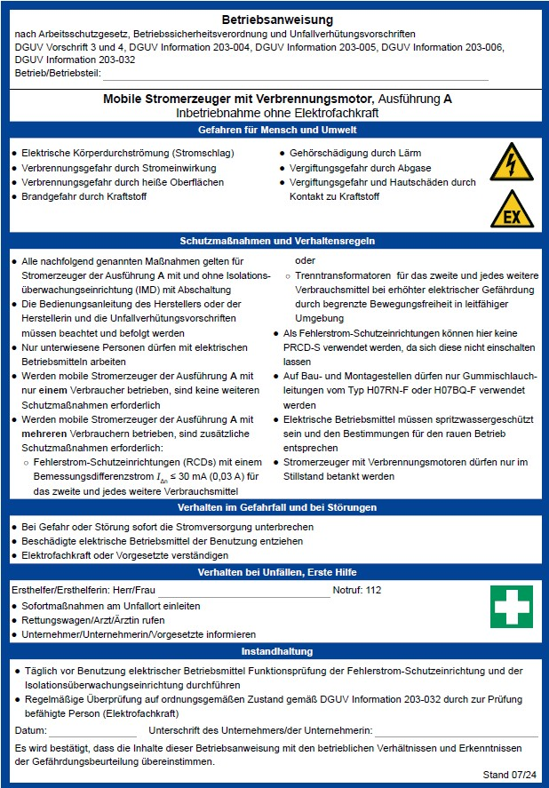
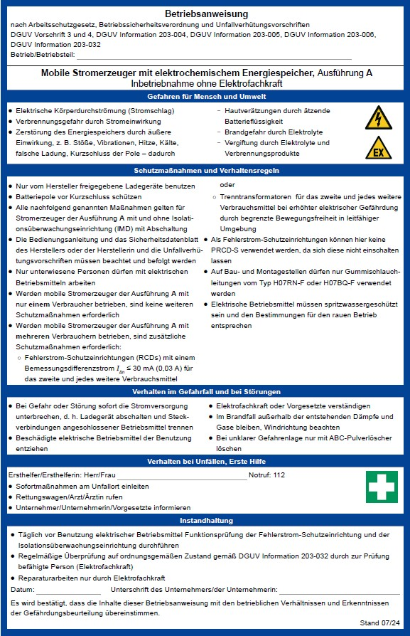

(Download der Datei "Muster-Betriebsanweisung für mobile Stromerzeuger der Ausführung A" unter https://dguv.de/fb-etem/sachgebiete/elektro_feinmechanik

(Download als Text-Datei unter www.dguv.de, Webcode: d138299)
